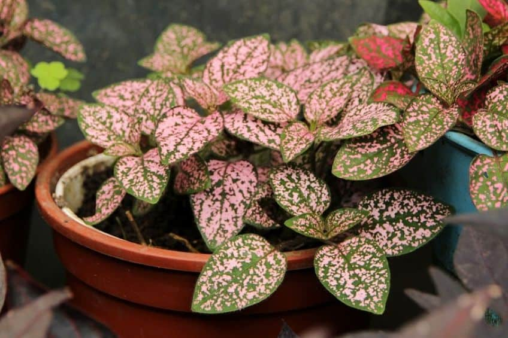
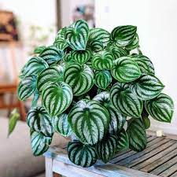
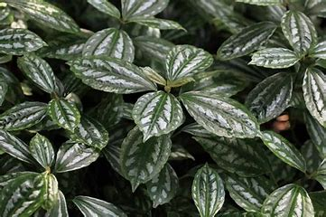

Top 3 Tanaman yang Cocok Untuk Terrarium
.png)
Jangan lupa follow akun Instagram berikut untuk update berikutya!! Klik disini
Artikel menarik lainnya ada disini:
Tanaman polka dot
Paperomia
Pilea Cadierei
Terrarium adalah salah satu cara merawat tanaman dengan menggunakan wadah kaca.Ada banyak tanaman yang dapat kita pilih,tanaman mini dan tanaman dedaunan bekerja paling baik di dalam terrarium.Tnaman yang tumbuh lambat juga bisa dijadikan pilihan.Saat memilih tanaman untuk terrarium,dianjurkan untuk memilih tanaman yang cukup kecil dan muat di dalam wadah terrarium.Untuk kamu yang bingung mau milih tanaman apa,berikut beberapa rekomendasi dari kami:
Hypoestes phyllostachya atau tanaman polka dot punya tampilan yang ceria dan hadir dalam varietas merah muda, merah, dan perak. Tanaman ini mudah dirawat, tapi mungkin perlu dipangkas jika terlalu tinggi atau panjang. Jika ingin menjadikannya sebagai tanaman untuk terrarium, pastikan menempatkan tanaman polka dot pada lingkungan dengan cahaya cerah dan terkena sinar matahari langsung

Peperomia caperata atau peperomia umumnya memiliki daun hijau atau daun dengan semburat merah yang indah. Tanaman yang tumbuh lambat ini juga cocok sebagai tanaman untuk terrarium. Peperomia juga terkadang menghasilkan paku bunga yang tampak cantik. Jika beruntung, bunga-bunga itu bisa menambahkan warna cerah untuk terrarium kita.

Tanaman ini menyukai cahaya rendah hingga sedang dan suhu hangat. Daunnya memiliki tanda putih hampir berwarna-warni sehingga tampak bersinar dan cantik. Pilea Cadierei tumbuh cukup cepat. Jadi, jika memilihnya sebagai tanaman untuk terrarium, kita mungkin perlu memangkasnya secara rutin. Tanaman ini juga mudah dibiakkan. Cukup ambil potongan kecil akar dan tanam di tanah yang lembap.
